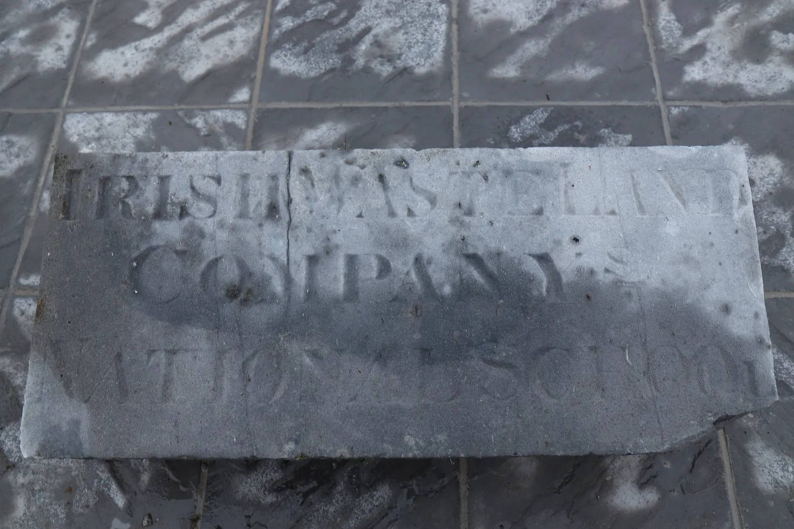

Knockmoyle East
Knockmoyle East in Irish “An Cnoc Maol Thoir” meaning bare or bald hill east. In the electoral division of Marblehill it is 623.92 acres or 252.49 hectares in size.
In the 1841 census there were 198 people and 38 houses and in the 1851 census there were 132 people and 24 houses in the townland. In the 1840 map there were at least 57 houses or outbuildings. In the Griffith’s Valuation there were 19 houses, one national school, 27 landholders and a commonage. In the 1901 census there were 57 inhabitants and 15 residences and in the 1911 census there were 47 inhabitants and 15 residences.
There were two national schools in Knockmoyle East. The first was opened by the Irish Waste Land Improvement Society around the time of the famine. It was later replaced by a second school on the main road, itself now disused.

In the 1840 map there is a ringfort marked in the eastern end of the townland.
Knockmoyle East borders Carrowroe, Cloghvoley, Drum, Knockmoyle West, Kylenagappa, Marblehill and Reynabrone.
Map
Placenames
| Name | Type | Notes |
|---|---|---|
| The Reek of Hay Field | field | |
| The Russauns | field | |
| The Long Meadow | field | |
| The Hairy Boreen | road | Boreen pronounced “Boatcheen”. |
| The Moor | field | |
| The Sheep Park | field | |
| St. Ciarán’s Well | well | This well was said to be associated with St. Ciarán. There is a spout on the road that comes out from this well, it never stops or runs dry. |
| Burns’ Field | field | Location might not be exact. |
| Bawn’s Cross | crossroads | |
| The Corner of the Wood | wood | |
| Kealey’s Well | well | |
| The Wood Road | road | |
| The Low Road | road | |
| The Green Meadow | field | |
| Bogach | bog |
Houses
| Name | Notes |
|---|---|
| Moran’s House | |
| Farrell’s House | They moved from the house to the east to here. |
| Cleary’s House | Edward Cleary. |
| Tommy Larkin’s House | |
| Murray’s House | |
| Finn’s House | Then Murray’s. |
| Bob Bruton’s House | |
| Melia’s House | Then Kelly’s, then Mahony’s. |
| Lyons’ House | |
| Rourke’s House | |
| Tuohy’s House | Pat Joe Tuohy’s house. |
| Johnny Tuohy’s House | |
| Bowen’s House | |
| Fahy’s House | |
| Henderson’s House | A Fahy woman married Henderson. |
Buildings
| Name | Notes |
|---|---|
| Scully’s Forge | |
| Mahony’s Forge | |
| Wasteland’s School (Old) | This school was opened by the Irish Waste Land Improvement Society around the time of the famine. It was later replaced by the (now disused) school on the main road. |
| Wasteland’s School (New) | This school was built to replace the older school in the townland, it is now disused. |